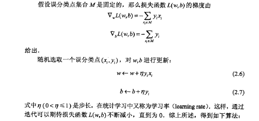
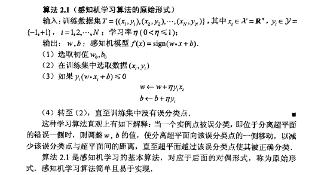
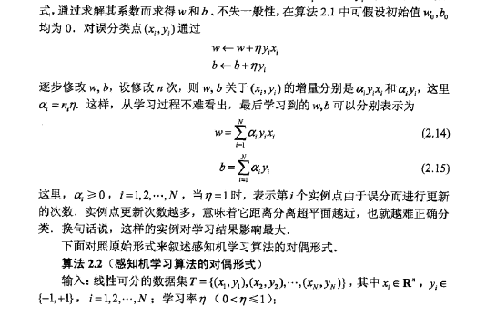
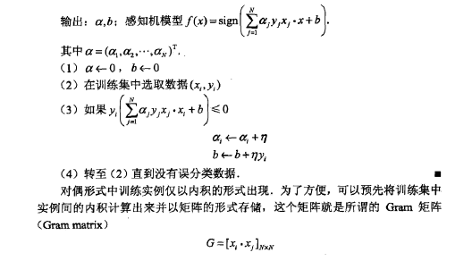
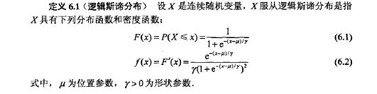
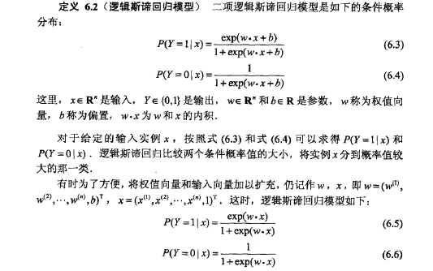
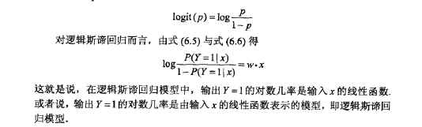
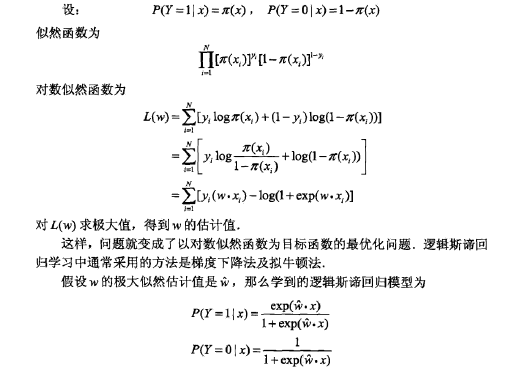
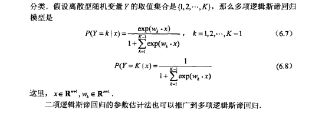

机器学习笔记
感知机
感知机模型
感知机是根据输入实例的特征向量$x$对其进行二分类的线性分类模型：
感知机的学习策略
感知机的学习目标：
- 寻找一个能够将训练数据集中的正负实例点完全正确分开的超平面
- 确定感知机模型，即求感知机模型参数$w,b$
感知机的学习策略：极小化损失函数$\min_{w,b}L(w,b)=- \sum_{x \in M} y_i(w \cdot x+b)$
损失函数对应于误分类点到分类超平面的总距离（函数距离）
- 误分类点：$-y_i(w \cdot x+b)<0$
- 几何距离$-\frac 1 ||w|| y_i(w \cdot x+b)$
- 函数距离$-y_i(w \cdot x+b)$
直观上的理解：当一个点被误分类，即位于分离超平面的错误一侧时，则调整w,b的值，使分离超平面向该误分类点的一侧移动，以减少该误分类点与超平面的距离，直至超平面越过该分类点使其正确分类
感知机的学习算法
感知机学习问题转化为求解损失函数的最优化问题，最优化的方法是随机梯度下降法，具体包含原始形式和对偶形式。
还需证明在训练数据集线性可分条件下感知机学习算法的收敛性。
原始形式
首先任意选取一个超平面，然后梯度下降法不断极小化损失函数，在这过程中一次随机选取一个误分类点使其梯度下降。


优缺点
- 优点：感知机算法简单并且易于实现
- 缺点：感知机学习算法由于采用不同的初值或选取不同的误分类点，解可以不同
对偶形式
对偶形式的一般思想：将$w,b$表示为实例$x_i$和标记$y_i$的线性组合形式，通过求解其系数而求得$w,b$，不是一般性。


算法的收敛性（略）
对于线性可分训练数据集，感知机学习算法原始形式是收敛的，即经过有限次迭代可以得到一个将训练数据集完全正确划分的分类超平面及感知机模型
关键词
- 二分类的线性分类模型；判别模型
- 分离超平面
- 数据集的线性可分性
- 损失函数；几何距离；函数距离
- 二分类，类标记$y \in {-1,+1}$
参考资料
逻辑斯蒂回归与最大熵模型
共同点：逻辑斯蒂回归模型和最大熵模型都是对数线性模型，其学习算法都可采用改进的迭代尺度算法和拟牛顿算法
逻辑斯蒂回归模型
逻辑斯蒂回归模型，由条件概率$P(Y|X)$表示，形式为参数化的逻辑斯第分布
逻辑斯蒂分布

二项逻辑斯蒂回归模型
逻辑斯蒂回归模型

对数几率

- w直观表达了不同属性在预测中的重要性，因此，线性分类模型由很好的解释性
- 线性模型$f(x)=w^T+b$
- 对数线性模型$\ln f(x)=w^T+b$
- 在用线性回归模型的预测结果去逼近真实标记的对数几率，其对应模型称为“对数几率回归”，或“逻辑回归”
优缺点
- 优点：直接对分类可能性进行建模，无须事先假设数据分布，避免了假设分布不准确所带来的问题；不仅预测出“类别”，而是得到近似概率预测，对许多利用概率辅助决策的任务有用；对数几率函数是任意阶可导凸函数，现有许多优化算法都可以直接用于求取最优解。
模型参数估计
极大似然估计法估计模型参数，从而得到逻辑斯蒂回归模型

多项逻辑斯蒂回归模型

关键词
- 逻辑斯蒂回归模型；对数线性分类模型；判别模型
- 逻辑斯蒂分布；sigmoid函数
- 对数几率；logit函数；对数几率函数
参考资料
- 机器学习(四)—Logistic回归推导
最大熵模型